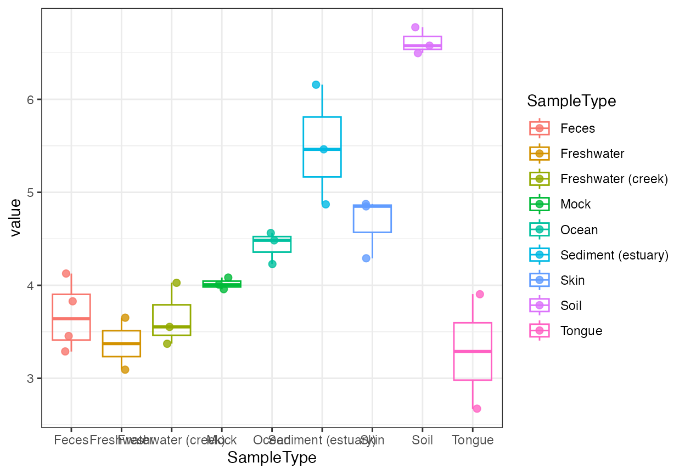
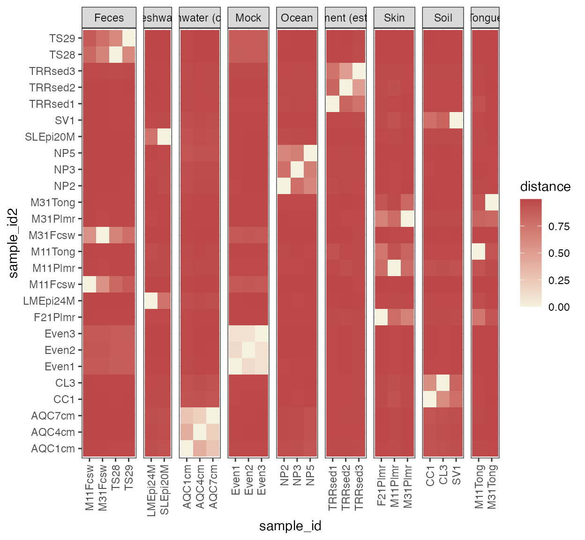
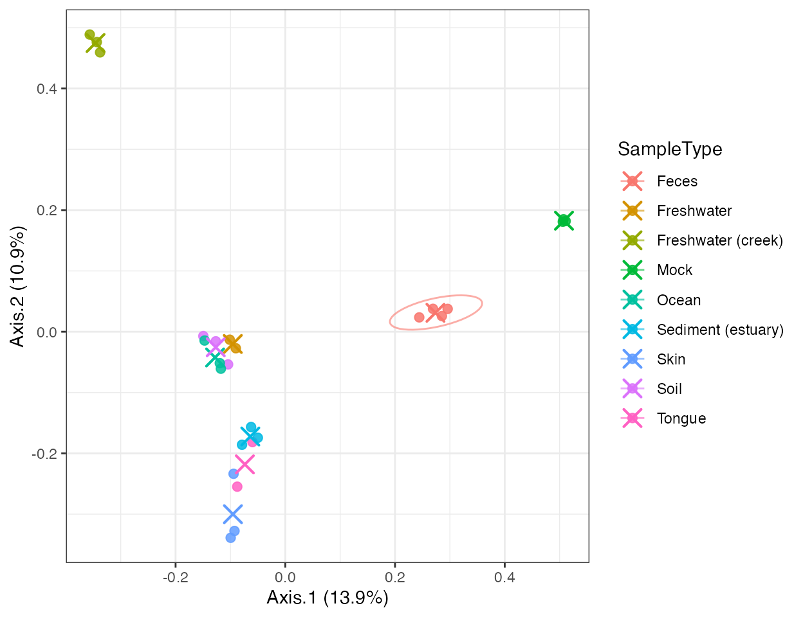
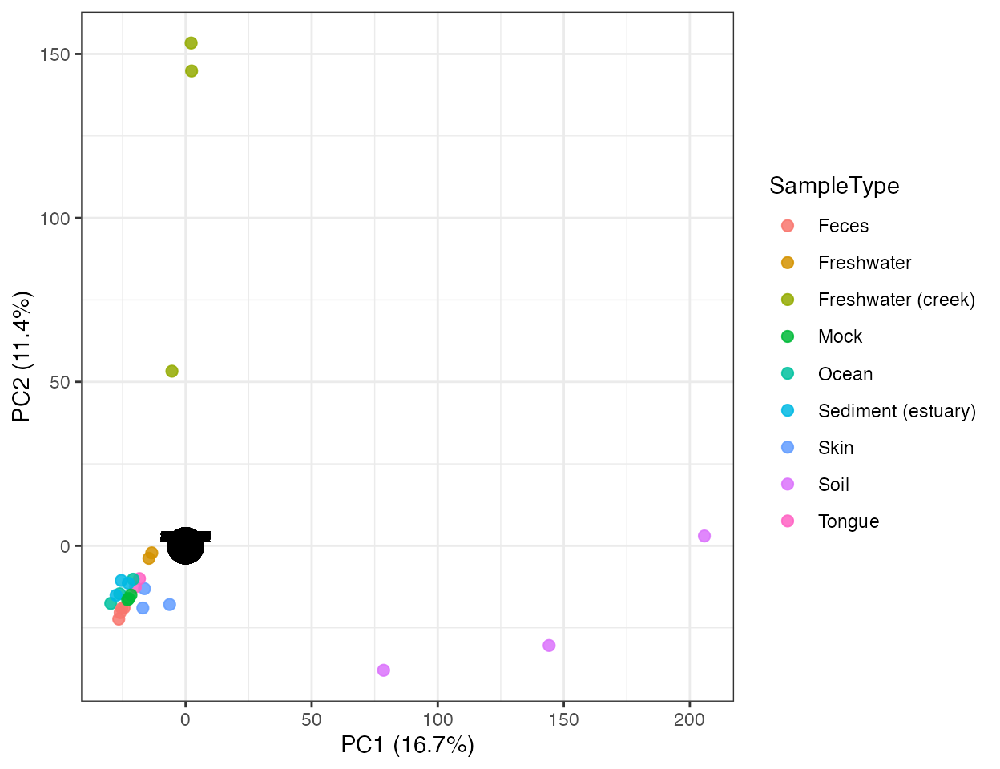

Diversity and ordination analysis
Xiaotao Shen xiaotao.shen@outlook.com
2026-03-04
Source:vignettes/relative_intensity.Rmd
relative_intensity.RmdThis article introduces the lightweight analysis layer built on top
of microbiome_dataset.
library(microbiomedataset)
data("global_patterns", package = "microbiomedataset")
object <- global_patternsAlpha diversity
alpha <- calculate_alpha_diversity(object, metric = "shannon")
alpha
#> microbiome_diversity
#> Type: alpha
#> Method: shannon
#> Rows: 26
head(as_tibble_diversity(alpha))
#> # A tibble: 6 × 9
#> sample_id value Primer Final_Barcode Barcode_truncated_plus_T
#> <chr> <dbl> <fct> <fct> <fct>
#> 1 CL3 6.58 ILBC_01 AACGCA TGCGTT
#> 2 CC1 6.78 ILBC_02 AACTCG CGAGTT
#> 3 SV1 6.50 ILBC_03 AACTGT ACAGTT
#> 4 M31Fcsw 3.83 ILBC_04 AAGAGA TCTCTT
#> 5 M11Fcsw 3.29 ILBC_05 AAGCTG CAGCTT
#> 6 M31Plmr 4.29 ILBC_07 AATCGT ACGATT
#> # ℹ 4 more variables: Barcode_full_length <fct>, SampleType <fct>,
#> # Description <fct>, class <chr>
plot_alpha_diversity(
alpha,
x = "SampleType",
color_by = "SampleType"
)
Beta diversity
beta <- calculate_beta_diversity(object, method = "bray")
beta
#> microbiome_diversity
#> Type: beta
#> Method: bray
#> Samples: 26
dim(as.matrix(extract_diversity_result(beta)))
#> [1] 26 26
annotation <- stats::setNames(
as.character(object@sample_info$SampleType),
object@sample_info$sample_id
)
plot_beta_diversity(beta, annotate_by = annotation, cluster = TRUE)
Ordination
pcoa <- run_ordination(object, method = "PCoA", distance_method = "bray")
pca <- run_ordination(object, method = "PCA")
head(as_tibble_ordination(pcoa))
#> # A tibble: 6 × 10
#> Axis.1 Axis.2 sample_id Primer Final_Barcode Barcode_truncated_plus_T
#> <dbl> <dbl> <chr> <fct> <fct> <fct>
#> 1 -0.127 -0.0157 CL3 ILBC_01 AACGCA TGCGTT
#> 2 -0.149 -0.00714 CC1 ILBC_02 AACTCG CGAGTT
#> 3 -0.104 -0.0537 SV1 ILBC_03 AACTGT ACAGTT
#> 4 0.285 0.0258 M31Fcsw ILBC_04 AAGAGA TCTCTT
#> 5 0.244 0.0236 M11Fcsw ILBC_05 AAGCTG CAGCTT
#> 6 -0.0926 -0.328 M31Plmr ILBC_07 AATCGT ACGATT
#> # ℹ 4 more variables: Barcode_full_length <fct>, SampleType <fct>,
#> # Description <fct>, class <chr>
plot_ordination(
pcoa,
color_by = "SampleType",
ellipse_by = "SampleType",
centroid_by = "SampleType"
)
plot_ordination(
pca,
color_by = "SampleType",
show_loading = TRUE,
loading_scale = 2
)
Extract result tables
ordination_scores <- extract_ordination_result(pcoa)
diversity_values <- extract_diversity_result(alpha)
head(ordination_scores)
#> Axis.1 Axis.2 sample_id Primer Final_Barcode
#> 1 -0.12667533 -0.015709044 CL3 ILBC_01 AACGCA
#> 2 -0.14940705 -0.007137804 CC1 ILBC_02 AACTCG
#> 3 -0.10429782 -0.053710244 SV1 ILBC_03 AACTGT
#> 4 0.28543181 0.025755609 M31Fcsw ILBC_04 AAGAGA
#> 5 0.24415649 0.023606010 M11Fcsw ILBC_05 AAGCTG
#> 6 -0.09259285 -0.327628427 M31Plmr ILBC_07 AATCGT
#> Barcode_truncated_plus_T Barcode_full_length SampleType
#> 1 TGCGTT CTAGCGTGCGT Soil
#> 2 CGAGTT CATCGACGAGT Soil
#> 3 ACAGTT GTACGCACAGT Soil
#> 4 TCTCTT TCGACATCTCT Feces
#> 5 CAGCTT CGACTGCAGCT Feces
#> 6 ACGATT CGAGTCACGAT Skin
#> Description class
#> 1 Calhoun South Carolina Pine soil, pH 4.9 Subject
#> 2 Cedar Creek Minnesota, grassland, pH 6.1 Subject
#> 3 Sevilleta new Mexico, desert scrub, pH 8.3 Subject
#> 4 M3, Day 1, fecal swab, whole body study Subject
#> 5 M1, Day 1, fecal swab, whole body study Subject
#> 6 M3, Day 1, right palm, whole body study Subject
head(diversity_values)
#> sample_id value Primer Final_Barcode Barcode_truncated_plus_T
#> 1 CL3 6.576517 ILBC_01 AACGCA TGCGTT
#> 2 CC1 6.776603 ILBC_02 AACTCG CGAGTT
#> 3 SV1 6.498494 ILBC_03 AACTGT ACAGTT
#> 4 M31Fcsw 3.828368 ILBC_04 AAGAGA TCTCTT
#> 5 M11Fcsw 3.287666 ILBC_05 AAGCTG CAGCTT
#> 6 M31Plmr 4.289269 ILBC_07 AATCGT ACGATT
#> Barcode_full_length SampleType Description
#> 1 CTAGCGTGCGT Soil Calhoun South Carolina Pine soil, pH 4.9
#> 2 CATCGACGAGT Soil Cedar Creek Minnesota, grassland, pH 6.1
#> 3 GTACGCACAGT Soil Sevilleta new Mexico, desert scrub, pH 8.3
#> 4 TCGACATCTCT Feces M3, Day 1, fecal swab, whole body study
#> 5 CGACTGCAGCT Feces M1, Day 1, fecal swab, whole body study
#> 6 CGAGTCACGAT Skin M3, Day 1, right palm, whole body study
#> class
#> 1 Subject
#> 2 Subject
#> 3 Subject
#> 4 Subject
#> 5 Subject
#> 6 Subject